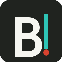

ContextBridge v0.5.78 a
Browser setup01 · Local service
Connect this browser to ContextBridge.
The token authorizes only your local service. Page access stays separate and explicit.
Not checked yet
02 · Browser slots
Choose what ContextBridge may open.
Fresh chats avoid mixing jobs with personal conversations. You can attach an existing page yourself later.
03 · Ready
✓
Ready to connect.
ContextBridge will request only the selected site permissions, create fresh chats when selected, and connect them to the local service.
ServiceNot checked
Browser slotsChatGPT + Gemini
Session policyManual · change later